Tema CS1: Introducción a Maxima
(Soluciones de ejercicios propuestos)
En esta relación se presenta ejercicios del tema CS1. En la relación se
usarán las siguientes funciones: abs, bfloat, carg, expand, factor,
find_root, float, fpprec, is, linsolve, plot2D, radcan, rectform y solve.
1 Ejercicio 1
Ejercicio 1.1. Definir la constante a igual a
(20+14*sqrt(2))^(1/3) + (20-14*sqrt(2))^(1/3)
(%i56)
a : (20+14*sqrt(2))^(1/3) + (20-14*sqrt(2))^(1/3);
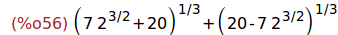
Ejercicio 1.2. Calcular el valor numérico de a. ¿A qué entero se aproxima?
Nota: Usar la función round.
(%i57)
round(float(a));
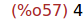
Ejercicio 1.3. Confirmar la conjetura con la orden is(...)
(%i58)
is(abs(a-4)<10^-9);
(%i59)
is(a=4);
2 Ejercicio 2
Ejercicio 2.1. Escribir el número
(sin(%pi/3)+cos(%pi/3))^9
en la forma a+b*c^d, donde a, b, c y d son números racionales.
Nota: Cambiar el valor de la variable %piargs a true y usar radcan para la
simplificación de radicales.
(%i60)
%piargs : true$
radcan((sin(%pi/3)+cos(%pi/3))^9);
%piargs : false$
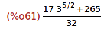
Ejercicio 2.2. Asignar a las variables a, b, c y d los valores obtenidos
en el apartado anterior y calcular el valor de
(sin(%pi/3)+cos(%pi/3))^9 - a+b*c^d
(%i63)
%piargs : true$
a:265/32$
b:17/32$
c:3$
d:5/2$
radcan(radcan((sin(%pi/3)+cos(%pi/3))^9)-(a+b*c^d));
%piargs : false$
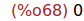
3 Ejercicio 3
Ejercicio 3. Calcular la cifra 149 del número pi.
(%i70)
fpprec : 150;
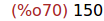
(%i71)
bfloat(%pi);
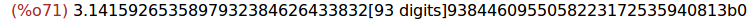
Por tanto, la cifra 149 de pi es 3.
4 Ejercicio 4
Ejercicio 4.1. Asignarle a p el polinomio x^4-x^3-7*x^2-8*x-6
(%i72)
p : x^4-x^3-7*x^2-8*x-6;
Ejercicio 4.2. Calcular las raices reales de p.
(%i73)
solve(p);
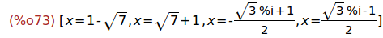
Por tanto, las raices reales de p son 1+sqrt(7) y 1-sqrt(7).
Ejercicio 4.3. Factorizar al máximo el polinomio p.
(%i74)
(x-sqrt(7)-1)*(x+sqrt(7)-1)*(x-(sqrt(3)*%i-1)/2)*(x+(sqrt(3)*%i+1)/2);
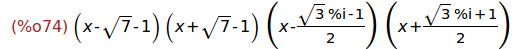
(%i75)
ratsimp(%);
5 Ejercicio 5
Ejercicio 5.1. Asignar a z el número complejo
((1-%i*sqrt(3))/(1+%i))^20
(%i76)
z : ((1-%i*sqrt(3))/(1+%i))^20;
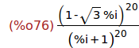
Ejercicio 5.1. Calcular la parte real y la parte imaginaria de z.
Nota: Usar radcan para simplificarla.
(%i77)
realpart(z);
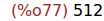
(%i78)
imagpart(z);
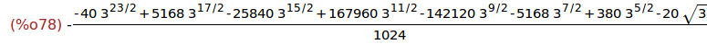
(%i79)
radcan(imagpart(z));
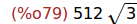
Ejercicio 5.2. Calcular el módulo y el argumento de z.
(%i80)
radcan(abs(z));
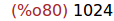
(%i81)
radcan(carg(z));
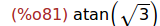
6 Ejercicio 6
Ejercicio 6.1. Con la ayuda de la representación gráfica, conjeturar el
número de soluciones de sin(x)=1-x^4.
(%i82)
wxplot2d([sin(x),1-x^4], [x,-2,2],[y,-2,2])$
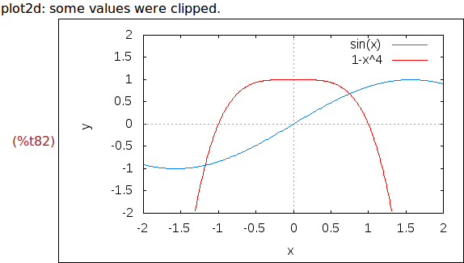
Tiene dos raíces: una entre -1.5 y -1 y la otra entre 0.5 y 1.
Ejercicio 6.2. Dar una aproximación de cada solución.
(%i83)
find_root(sin(x)=1-x^4, x, -1.5, -1);
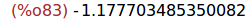
(%i84)
find_root(sin(x)=1-x^4, x, 0.5, 1);
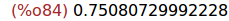
7 Ejercicio 7
Ejercicio 7.1. Borrar el valor de todas las variables.
(%i85) remvalue(all)$
Ejercicio 7.1. Resolver el sistema lineal
x +2*y=1,
2*x+4*y=2
Nota: Usar el menú "Ecuaciones / Resolver sistema lineal".
(%i86)
linsolve([x+2*y=1, 2*x+4*y=2], [x,y]);
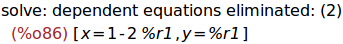
Ejercicio 7.2. Resolver el sistema lineal
x +2*y=1,
2*x+4*y=7
(%i87)
linsolve([x+2*y=1, 2*x+4*y=7], [x,y]);
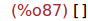
Ejercicio 7.3. Resolver el sistema lineal
x+z=y,
2*a*x-y=2*a^2,
y-2*z=2
en función del parámetro a.
(%i88)
linsolve([x+z=y, 2*a*x-y=2*a^2, y-2*z=2],[x,y,z]);